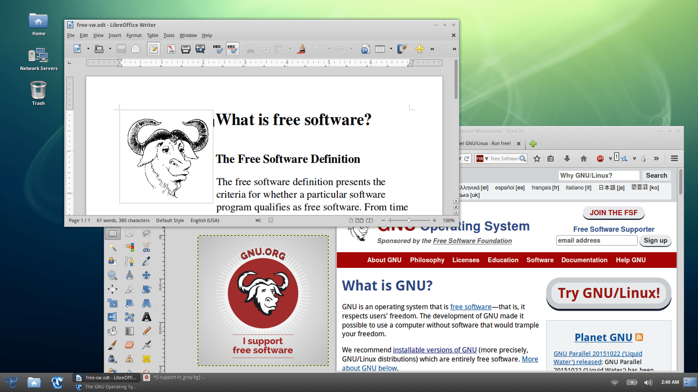

Zrzut ekranu dystrybucji Trisquel GNU/Linux z uruchomionym LibreOffice, wolnym oprogramowaniem biurowym; GIMP, wolnym programem do manipulacji obrazów; GNU IceCat, wolną przeglądarką na bazie Mozilla Firefox.